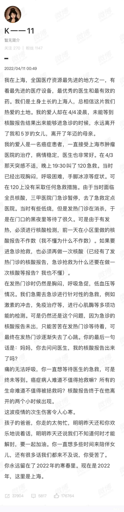
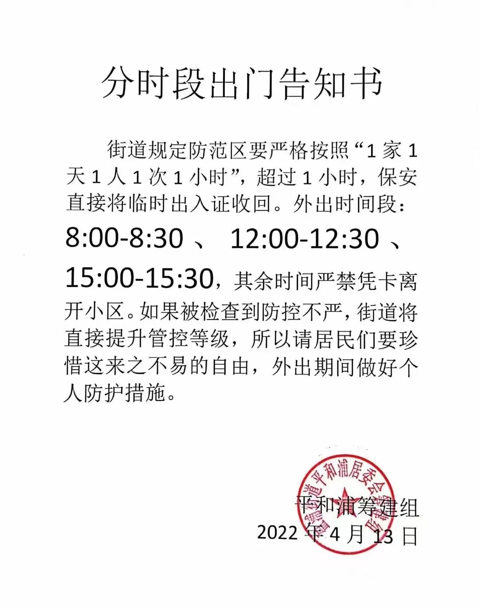
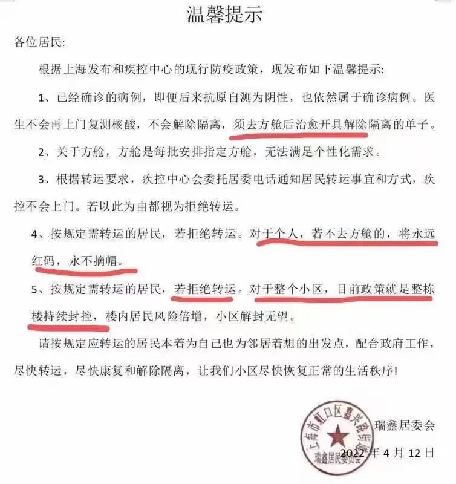

上海人的忍耐已经到了极限
现在的上海人，
每天晚上清点完冰箱忧心忡忡地睡下，
每天早上抢完菜后忐忑不安地点开上海发布的数据，
接着开启一天的核酸、抗原、团购、骂娘，
以及求助。
不知道为什么，每天都有刷新底线的事件。
一位土生土长的上海居民，一个5岁孩子的爸爸，接受治疗后病情稳定的癌症患者，4月3日突感不适120去医院，在有前一天小区做的核酸报告情况下，被要求马上进行本院的核酸报告才可收治，在等待的过程中离开人世。他死前的最后一句话是“妈妈，你去问问医生，我的核酸报告出来了吗？”在他离去两个小时后，核酸报告出来了，阴性。

网传某区卫健委的一位干部，一医毕业，聪颖专业，在巨大的压力中，在办公室自缢身亡。
一个刚出生14天的宝宝，被要求和阳性的父亲、母亲分开隔离，单独送去金山病房，孩子的奶奶试图跳上窗台以死相逼要求和宝宝在一起，产妇拖着孱弱的身体发出求助信息，仅仅请求妈妈能和宝宝隔离在一起，让孩子吃上一口母乳。这是在“阳性的家长可以和孩子一起隔离”的新闻发布会以后发生的事。
许多毗邻居民区的中小学突然变成了方舱，居民抗议，师生愕然，很多老师的书本还在学校里面，班级里存放着学生的私人物品，甚至有的寄宿学校还住着学生。这学期还能开学吗？马上中高考了，毕业班前途何在？
今天上海大风暴雨，赶工完成的南汇方舱和高桥方舱全都屋顶漏水！阳性病人所在的居所纷纷遭遇被褥床铺湿透，人员挨淋挨冻的惨况，更有甚者，一些方舱本就不堪的厕所在暴雨、停电、停水、爆筏等多重压力下，粪便横流，无人修理。这是方舱啊！既然把人抓来“治疗”，那也得当病人对待啊，为什么要让人毫无尊严？
打热线、找居委，遇到的标准答案永远是“已经报上去了”“等上面通知”。网民们自己做了一个求助文档我们来帮你 · 上海抗疫互助 (helpothers.cn)https://www.helpothers.cn/help/，将各方求助列进其中，自己互助，打开文档尽是不能再等的紧急情况，但凡有一位领导亲自看到这个文档，都不会好意思说那些空话。
一位居住在永康路大半辈子病痛难忍的老先生和居委工作人员的电话，“为什么上海会变成这个样子？”答复“我无能为力”，一声悲愤长叹。
是啊，为什么会这个样子？为什么我们全力配合政府要求，说停工就停工，说足不出户就足不出户，说每天核酸就每天核酸，说半夜再核酸就半夜再爬起核酸，说14天就14天，说加7就加7 ，说共克时艰就咬紧牙关，工作丢了就丢了，公司关了就关了，抗疫第一，说屏牢就屏牢，结果呢？
足不出户半个月、一个月，小区里的阳性一例一例地增加，本来没有阳性的小区也在长达一个月的严格封锁里出现了阳性。封控区解封无望，管控区不断出新，所谓防范区都只能一户出一人每天出门一小时，还不能走太远。

在上海市民认真、严格、克服了所有需求坚持配合抗疫的情况下，每日的公布数字仍是两万多两万多地跳出。
所有的专科医生都扑出去做永无止境的核酸检测， 大部分医疗系统停摆，所有新冠以外的病人挣扎在生死线上，无法就诊、无法手术、无法配药，120要排队，出门单不给开，血透轮不上，化疗做不了，所有的病人都以自己的生命为十五万里仅有一例重症的奥密克戎让路，从东方医院的周护士到120无视去世的老人家，到今天这位在等核酸报告中离世的急诊患者，以及经济学家的高龄母亲、开不到抗抑郁药的病人、他们没有得到一个说法，就憋屈地离开了人世，成为大局为重中的一粒尘埃。
相信政府只封四天就买了四天食物的市民，已纷纷陷入断粮危机。
运力严重不足，我所在的区域，几个买菜app已经停运，抢菜的资格都没有，只能依赖小区热心居民发起的团购，也仅限于最基本的米面油蔬菜，更多的生活需求无法解决。
甚至现在赖以维持生活刚需的团购都面临重重限制，“为了减少外来物品传播病毒风险”和“减轻志愿者负担”，许多小区物业和居委要求团购报批，居委和物业来审，哪些可以买哪些不能买，例如：居委会团购的可以买，自己发起的团购不能买；保供单位的菜可以买，私人老板的菜不能买；蔬菜挂面可以买，咖啡水果“非生活必需品”不能买等等规定。但什么是生活必需品？谁来定义能买不能买的范畴？一层一层的审批，权力寻租的空间又有多大？
做了几回团长，你会感觉从互联网时代倒退到了供销社时代，本就不多的选择，还得想办法去抢去申请，供货联系人给的是永远繁忙的电话号码，司机师傅脾气要多大有多大，菜品质量差强人意也不能有任何意见，只要能到货就得感恩戴德，价格也自然是飞起。
这种仅有的购物方式令人感到恐惧，令人极其不适。更可怕的是短期内，似乎没有其他的购物方式了。京东美团这些高调亮相政府发布会承诺要保障民生的平台，打入现实就变成了永远发不了货的渣男。
你仔细一看，周边的苏州昆山等地都在全域静止都封了高速都在天天全面核酸，那谁给你发货？上海市再强调保障物资有什么用？严格的防疫政策下，全国十几个省市的物流受影响，行程码一带星就不让下高速，多少货车司机到上海吉林送完货就回不去了，滞留在高速路上，谁还敢给送货？哪个供应商愿意承担高昂的成本和风险？
我们可能再也无法自由地选购一瓶自己想要的酱油了。
更多的人，是啥也没得吃了。这几天，众多的独居老人守到弹尽粮绝才发出求救要一口吃的，他们中有老教授，老专家，经历过浩劫年代，为祖国做出过杰出贡献，也不缺钱的知识分子，结果困在2022年吃不上饭，荒不荒谬？
既然我们抗疫的主要目标是为了保护老人，那这些吃不上饭、看不上病、甚至还要搭上命的老人现状是怎么造成的？
上海是服务业占比很重的城市，这里有大量手停口停的打工人，他们无法“居家办公”，他们也没有独立的住所，居住地不具备做饭的条件，收不到慰问物资，也没有财力长久支撑。
如果我们足不出户二十天，天天核酸抗原轮番做，阳性数字还在狂涨，那足不出户和天天核酸的效果又在哪？
所有的检测医生、居委、小区物业都在超负荷运转，基层一线已经承担了远超自己能力的任务、指令和骂声，上级朝令夕改随意传旨，轻巧地一声“服务上门”的时候，有没有设身处地替做事的人想过？
【此处因镜像制作者立场不同而删去78字】
得阳性的人有罪吗？
得阳性是故意传染的吗？
“无疫小区”是可以靠人为努力就能做到的吗？
现在匆忙赶成下雨天屎尿横飞的方舱是能让人安心去住的吗？
让小区居民怨恨不幸染上阳性的邻居，制造阳性耻感，制造重重障碍，转移矛盾到群众内部，惩罚有阳性的楼栋不解封。
【此处因镜像制作者立场不同而删去13字】

【此处因镜像制作者立场不同而删去148字】